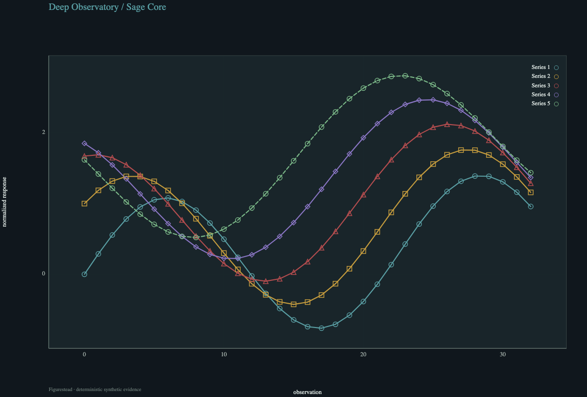
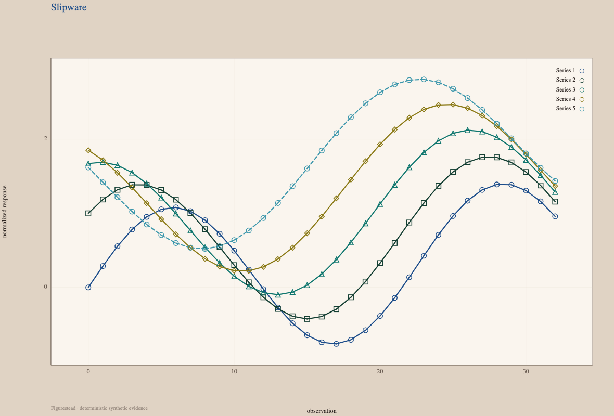
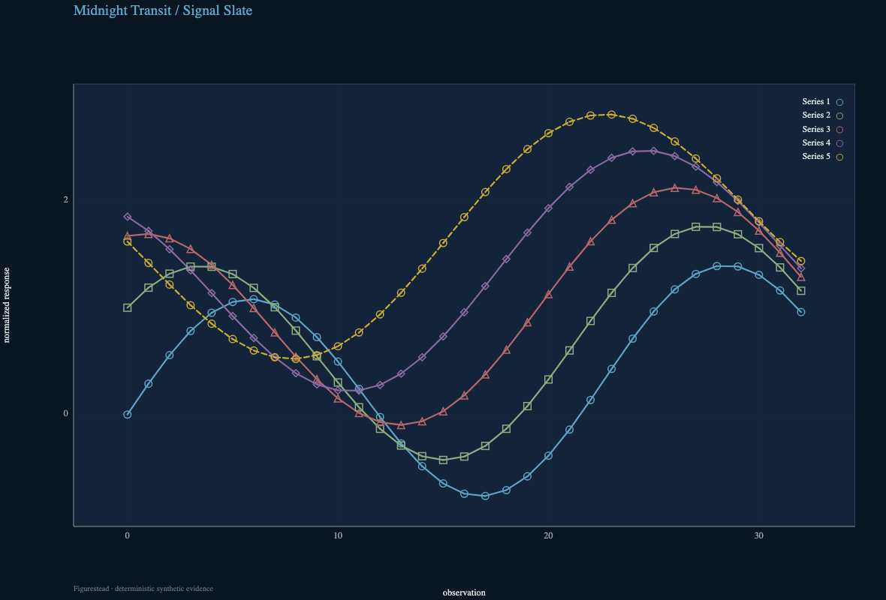
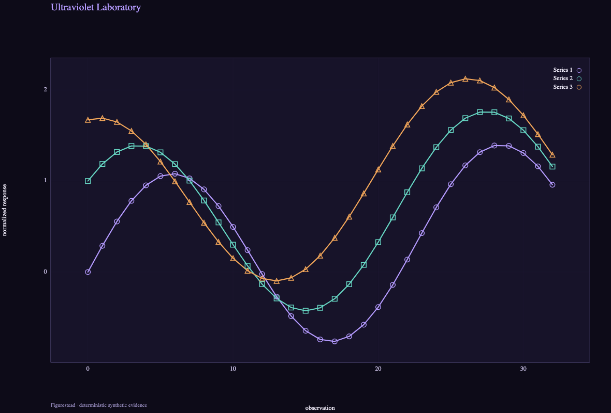
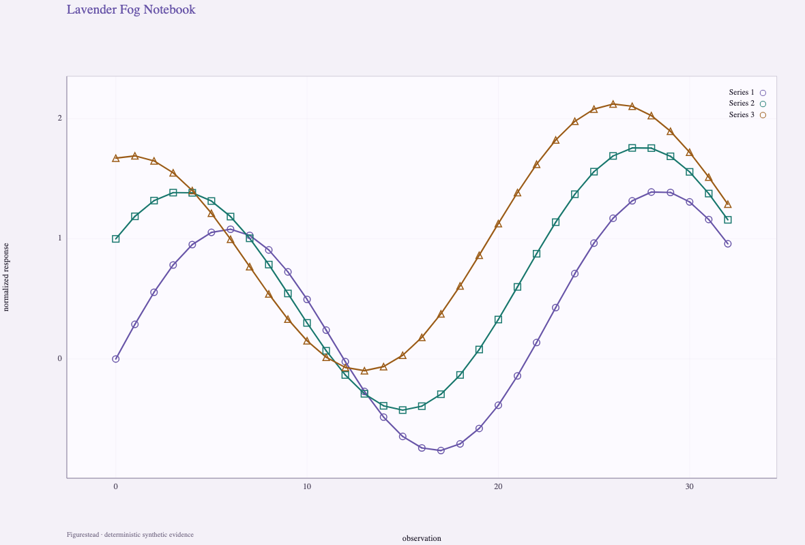
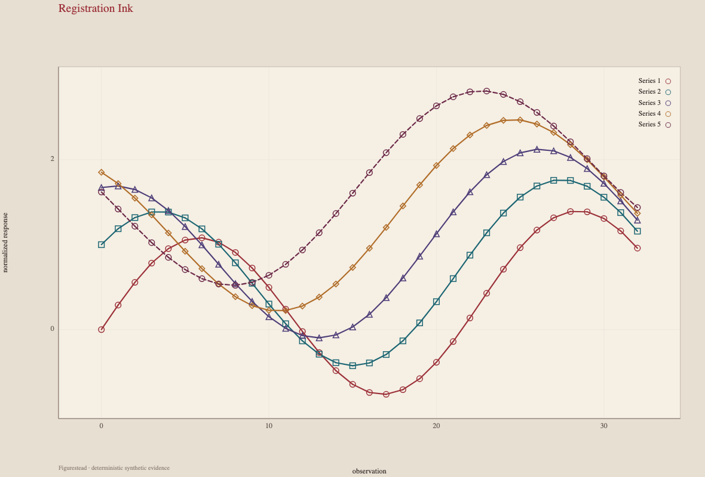
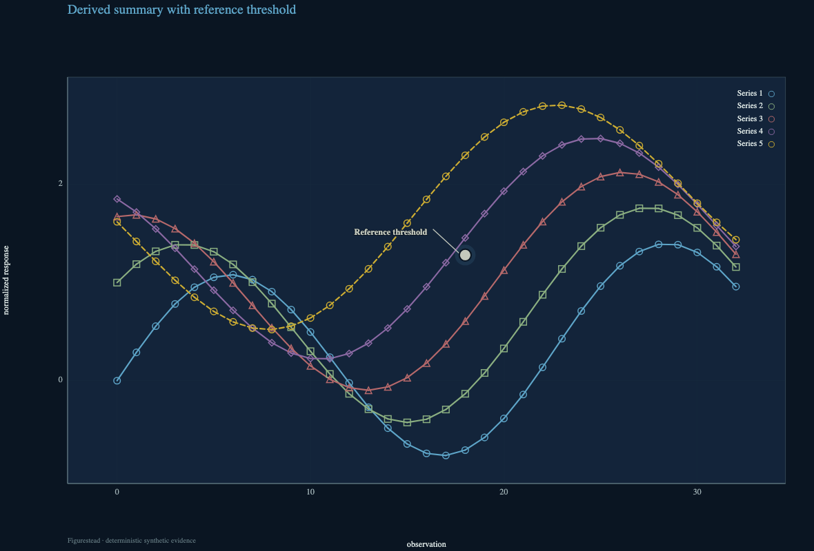

Deep Observatory / Sage Core
Sage-toned dark five-series foundation
Recommended color-led series: 5
sage-toned dark five-series foundation
Experimental public alpha
Six selected themes show how one scientific grammar can move between quiet foundations and expressive signatures without changing the underlying evidence.

01
Capability-first themes for broader multi-series use

Sage-toned dark five-series foundation
Recommended color-led series: 5
sage-toned dark five-series foundation

Light five-series flagship
Recommended color-led series: 5
light five-series flagship

Balanced dark five-series foundation
Recommended color-led series: 5
balanced dark five-series foundation
02
Identity-forward themes with explicit capacity guidance

High-contrast dark signature
Recommended color-led series: 3
Use active marker/dash redundancy for larger series counts.

Editorial light signature
Recommended color-led series: 3
Use active marker/dash redundancy for larger series counts.

Publication / registration-print specialist
Recommended color-led series: 5
publication/registration-print specialist
Traceable by design
The evidence atlas keeps line, scatter, matrix, phone, grayscale, threshold, stress, and digital paper cases together.
Open evidence atlas
03
The same normalized figure contract serves browser and Python entry points.
createFigurestead(canvas, contract, { reducedMotion: true });figure, axes = line(x, ys, spec=spec, theme=theme)04
This experimental alpha features six themes from a broader design catalog. Recommended color-led series capacity is explicit; the six-series signature studies rely on marker and dash redundancy beyond that recommendation. Digital paper evidence records a measured 6.372 pt minimum label against a 6 pt floor, without physical printer proof. This is not universal accessibility, renderer, projector, or physical-print certification.